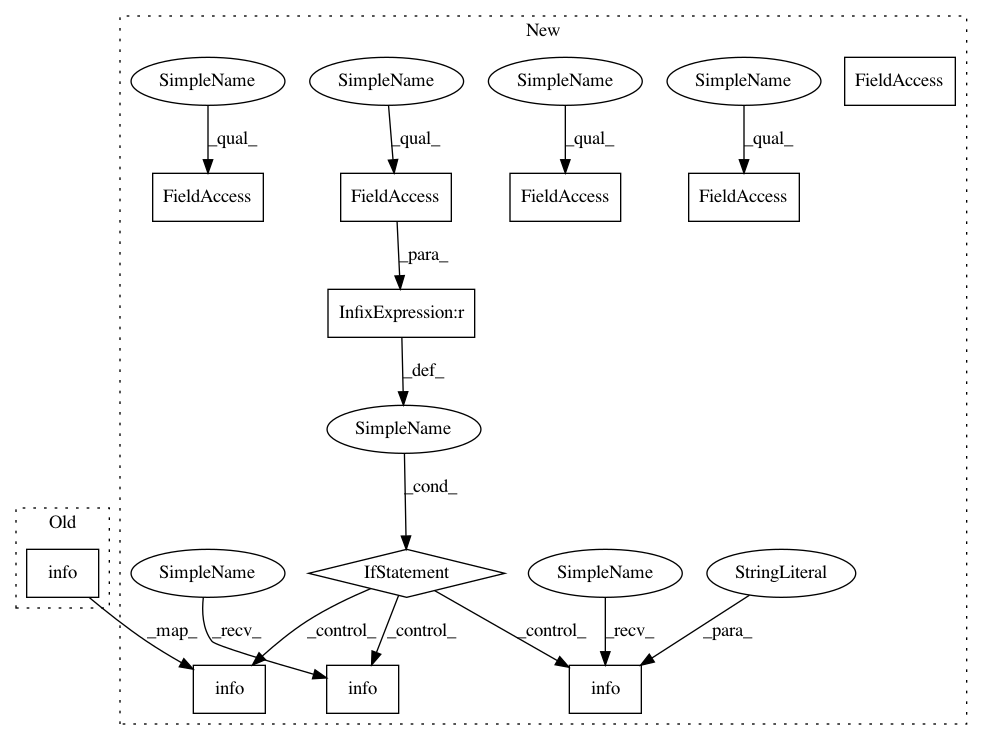

c284bff57b02cd76c8c90432aa29abd8df65d6f7,skmultiflow/evaluation/EvaluatePrequential.py,EvaluatePrequential,train_and_test,#EvaluatePrequential#Any#Any#,70
Before Change
self.update_metrics()
end_time = timer()
logging.info("Evaluation time: %s", str(round(end_time - init_time, 3)))
logging.info("Total instances: %s", str(self.global_sample_count))
logging.info("Global accuracy: %s", str(round(self.global_correct_predicts/self.global_sample_count, 3)))
logging.info("Global kappa statistic %s", str(round(self.global_kappa, 3)))
After Change
X, y = self.stream.next_instance(self.batch_size)
if X is not None and y is not None:
prediction = self.classifier.predict(X)
self.global_sample_count += self.batch_size
self.partial_sample_count += self.batch_size
self.kappa_predicts.add_element(np.ravel(prediction))
self.kappa_true_labels.add_element(np.ravel(y))
for i in range(len(prediction)):
nul_count = self.global_sample_count - self.batch_size
if ((prediction[i] == y[i]) and not (self.global_sample_count > self.max_instances)):
self.partial_correct_predicts += 1
self.global_correct_predicts += 1
if ((nul_count + i + 1) % (rest/20)) == 0:
logging.info("%s%%", str(((nul_count+i+1) // (rest / 20)) * 5))
if self.show_scatter_points:
self.visualizer.on_new_scatter_data(self.global_sample_count - self.batch_size + i, y[i],
prediction[i])
self.classifier.partial_fit(X, y)
if ((self.global_sample_count % self.n_wait) == 0 | (self.global_sample_count >= self.max_instances) |
(self.global_sample_count / self.n_wait > before_count + 1)):
before_count += 1
self.kappa_count += 1
self.update_metrics()
end_time = timer()
except BaseException as exc:
if exc is KeyboardInterrupt:
self.kappa_count += 1
self.update_metrics()
break
if (end_time-init_time > self.max_time):
logging.info("\nTime limit reached. Evaluation stopped.")
logging.info("Evaluation time: %s s", str(self.max_time))
else:
logging.info("\nEvaluation time: %s s", str(round(end_time - init_time, 3)))
logging.info("Total instances: %s", str(self.global_sample_count))
logging.info("Global accuracy: %s", str(round(self.global_correct_predicts/self.global_sample_count, 3)))
logging.info("Global kappa statistic %s", str(round(self.global_kappa, 3)))
In pattern: SUPERPATTERN
Frequency: 3
Non-data size: 11
Instances
Project Name: scikit-multiflow/scikit-multiflow
Commit Name: c284bff57b02cd76c8c90432aa29abd8df65d6f7
Time: 2017-06-19
Author: guilhermekmatsumoto@gmail.com
File Name: skmultiflow/evaluation/EvaluatePrequential.py
Class Name: EvaluatePrequential
Method Name: train_and_test
Project Name: scikit-multiflow/scikit-multiflow
Commit Name: c284bff57b02cd76c8c90432aa29abd8df65d6f7
Time: 2017-06-19
Author: guilhermekmatsumoto@gmail.com
File Name: skmultiflow/evaluation/EvaluatePrequential.py
Class Name: EvaluatePrequential
Method Name: train_and_test
Project Name: RasaHQ/rasa
Commit Name: 5cd465c406b06872aeafb1142331daac986787cb
Time: 2018-08-08
Author: mr.voov@gmail.com
File Name: rasa_core/policies/keras_policy.py
Class Name: KerasPolicy
Method Name: train
Project Name: deepmipt/DeepPavlov
Commit Name: 7227b3fd871f87f9ed7367ebfb5ed086ff7820f3
Time: 2019-10-03
Author: mironov.sergey@huawei.com
File Name: deeppavlov/core/trainers/nn_trainer.py
Class Name: NNTrainer
Method Name: _validate